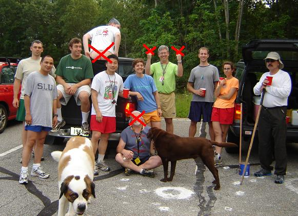

The “Holy Hell, We’re Almost All Here” Hash
Run #1056, June 26, 2006
Hare: Basket Boom Boom (substitution for Trail Hoover)
Location: Box Seats, Smithfield, RI
Weather: 60’s, sunny, wet
Present: Bondo Jovi, Trail Hoover, Async, G@GH, Amish Ithead, Cumunder, Dr. WHO, Dry Foot Fairy, Fuwangi, WIPOS, Oozing, Just Darrel (originally Boston), Just Travis, Seamus, Ben.
The Run:

Family Photo
This hash ended up being a who’s WHO (and yes, WHO is who) of the RIH3, with the whole crowd showing up – minus our bearded northern buddy Tinker, of course. It seemed like it’d be a great time. Lots of friends. Lots of sun. A virgin and a visitor. And looking at Google Earth, lots of water. What can be better?
Hare’s directions had the group pull into Box Seats for the start, which just happened to be pretty darn close to the shoreline of Woonasquatucket Reservoir. If there is anything the hash knows from past reservoir runs it’s that you’ve got two options. One – run counterclockwise. Two – run clockwise. Three (oh, I guess there are three options) – grab yourself an inflatable love doll and float straight across. Unbeknownst to us, Basket had picked a fourth option – the counterclockwise reservoir to clockwise non-reservoir hash. Brilliant! I think.
First few marks led us to believe that trail left southwest out of the back of the parking lot into a hill/ditch/pack of logs and briars. Dry Foot went down. Some others followed around the corner. Some others sat there and watched. In the 5min it took for the group to realize something wasn’t right Bondo had blazed a path at his normal snail’s pace northwest after receiving a tip (although not THAT kind of tip, you sickos!) from the hare. The pack soon caught up and proceeded along a path on the edge of the reservoir, heading in a counterclockwise direction. The virgin/visitor forged ahead at the speed of light. The rest of the RIH3 wasn’t impressed.
Luckily (haha!) for the group, Mother Nature had unleashed the flood gates and allowed massive amounts of rain to fall the previous weekend. This ensured a few things – that the reservoir was full, that the path along the reservoir’s edge was flooded, and that it was likely that poo and other septic system overflow managed to make its way up from underground. That last one can’t be confirmed, and thinking back it was most likely G@GH’s rectum that emanated the stench. Multiple transitions from dry path to wet path were made, with Fuwangi, WHO, Amish and the virgin/visitor forging ahead. At one point a check was passed and all continued blindly along the reservoir’s edge, although the mistake was quickly realized and a u-turn brought us back on trail.
A climb uphill through briars put everyone into a small industrial park, but after a little pavement pounding dirt was found once again. WHO was ahead? Actually, it wasn’t WHO, it was Async and Oozing. Both late. And WHO knows for what deviant reasons. Trail led back into the woods past a make-shift paintball field down towards a running stream. Some crossed, some did not. It didn’t really matter as both groups followed water upstream towards Forge Rd where a quick cross had us in a small park where Basket and Seamus were waiting after catching up from behind. WHO hammered uphill and the virgin/visitor ran at the speed of light. Once again, the RIH3 wasn’t impressed. Where Cumunder was during this whole event is a mystery. Earlier comments ranged from “this is awesome!” to “I think after all this water I can hare my whole hash on pavement next week.” A check was encountered at the top and while some of the pack went left, Amish went right managing to find true trail which continued for a short period of time before making a tight right-hander downhill, and then a tight left-hander at the bottom forging into the woods. Some bushwhacking occurred and trail led into yet another body of flowing water, this stream being belly-deep on most, boob-deep on a lucky few. Bondo is not a part of the lucky few. A quick in and out (WHO couldn’t use one of those!?) had everyone regrouping in a parking lot on Farnum Pike.
After the stream crossing, trail led north on Farnum Pike and then made a quick right turn onto Rolger Farm Rd. Uphill. Up lots of a hill. The stream crossings and reservoir circling started the hash off on a good foot (which is a combination of “a good note” and “the right foot”), but the combination of pavement and uphill roads left a lot to be desired. Lucky enough this stretch of crapiness was short lived, and a right onto Brenton led us to a quick left onto a trail along a set of power lines. WHO was FRB, with Amish and the virgin in hot pursuit. Soon after, trail led onto the practice field at Bryant University. Unfortunately no field hockey coeds in pigtails, short plaid skirts and knee-high socks were to be found. Not that anyone in the RIH3 would like to see such a thing. Flour marked a trail leading towards campus and only a bit of confusion occurred near some practice fields where various whistles from coaches tempted the hashers towards their direction. A few smart (haha!) hashers managed to find trail downhill and called on the rest, who were still standing there listing to the whistles like a deer in headlights. All proceeded through a wonderfully manicured grass field where a little Sound of Music skipping occurred, and quickly stopped , prior to entering the woods through a rough trail.
Hallelujah! The beer check! All were present except for Cumunder, and all were hoping that the hare would have to go back in search. Of course this would only occur after the beer was consumed so cups were filled and songs were sung. Not much after the party was started Cumunder came around the corner, much to our surprise, and much to our disappointment as it meant Basket would now be able to continue with us to the end. Also much to our disappointment, he’d managed to find the most mosquito-populated section of woods to hold the check in, so all were swatting and swinging. Who would let the insects get a free beer-filled blood sucking!? Not WHO! Trail Hoover even found a tick, and was quick to say “NO” after Amish offered to check her over for more.
Once the beer was finished up the group headed back out, following trail through the woods until it popped out onto Farnum Pike just across the street from Box Seats. Someone thought it’d be a bright idea to take a picture (scribe has “cleaned up” said picture to remove any inappropriate material). Everyone teetered in slowly and once together, a cooler of beer was brought down to the reservoir for the circle. All entered except Fawangi. Actually, all showed up but Fawangi. Brilliant! Cumunder stripped down to her skivvies and got wet (and how – I’ll let your mind wonder) just prior to the ratings. Something something something. Mathematical total: -0.69!! I think it had to do with lack of shiggy, mosquitos, Bondo at the beer check and all the other regular complaints. Bondo kept throwing the wooden toilet seat hashit into the water for Ben to chase. Unfortunately Ben came back each time. Hashit went to Oozing due to his continuous blabbing about the World Cup. As the sun set over the water the beers were finished and everyone went back to the cars to get changed prior to dinner. All enjoyed food, but none enjoyed pitchers as they were $20 a pop! One more hash down, if you’re smart – no more to go!
On On
Amish It Head